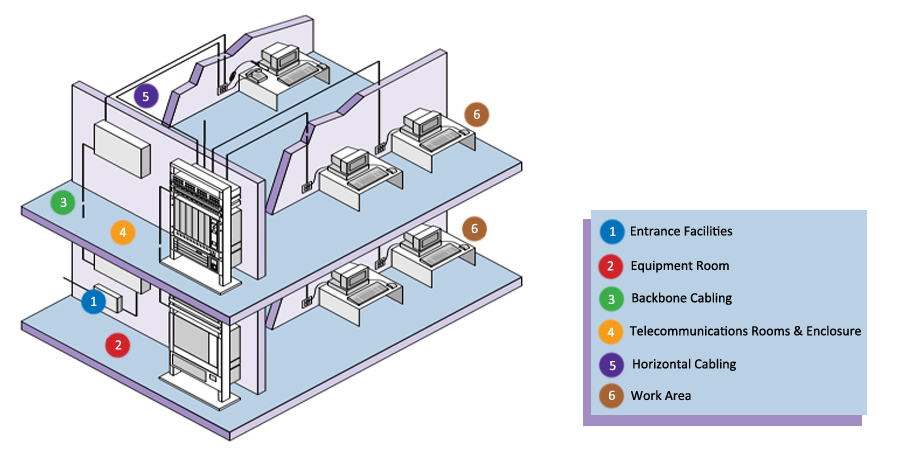
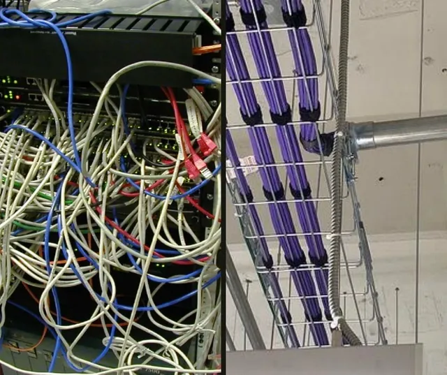
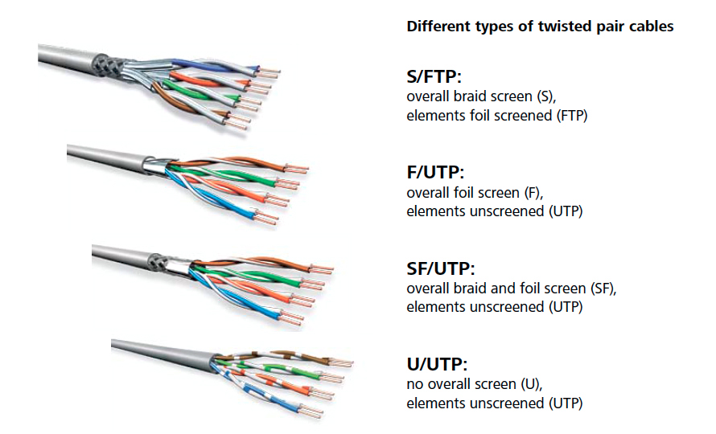
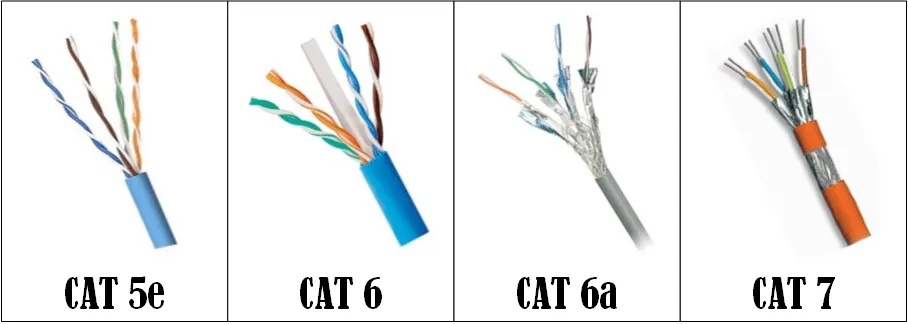
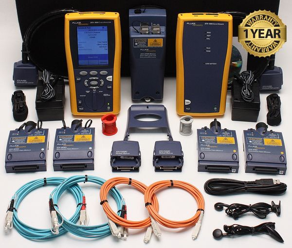
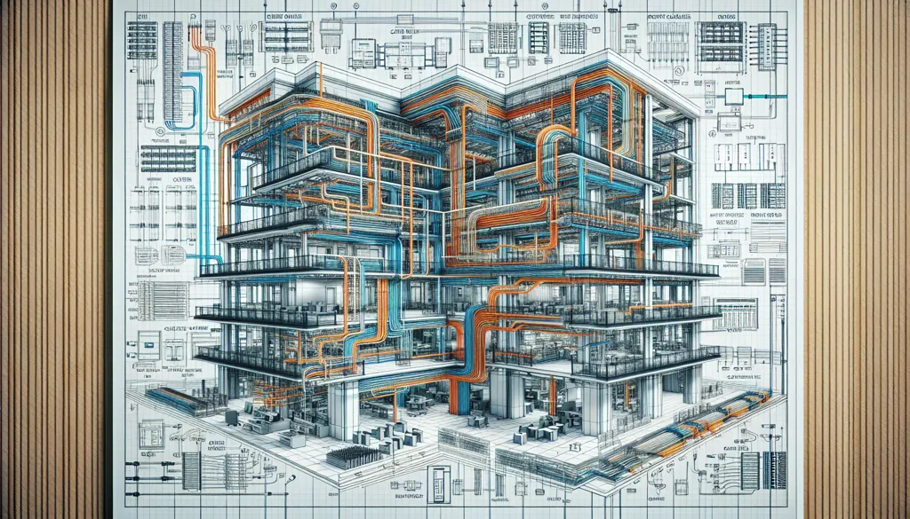

Artículos de Cableado Estructurado

Los Componentes Clave de un Sistema de Cableado Estructurado

La Diferencia Crucial: Cableado Estructurado vs. Cableado Convencional

Glosario Básico de Términos de Cableado Estructurado

Tipos de Cables de Red para Cableado Estructurado


Introducción a las Pruebas y Certificación de Cableado Estructurado
Solución de Problemas Avanzados en Sistemas de Cableado Estructurado
